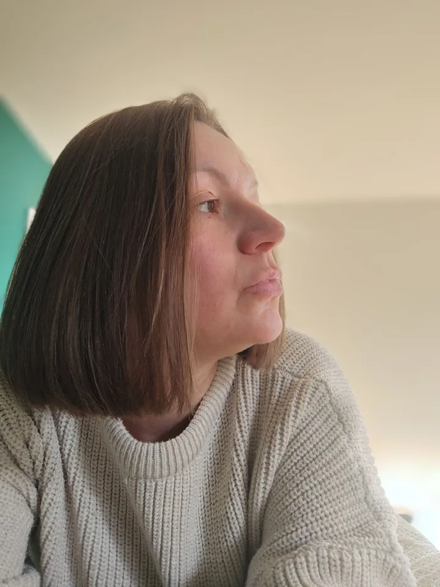
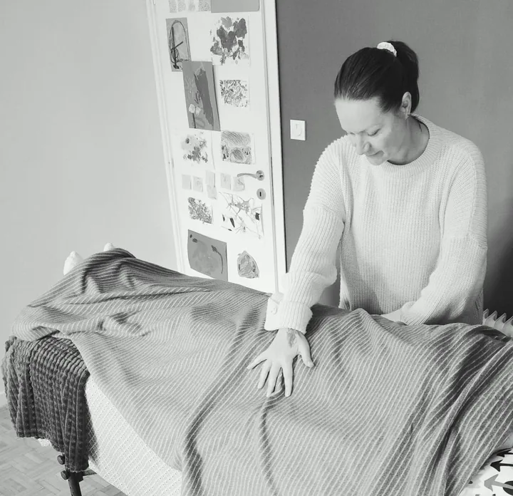
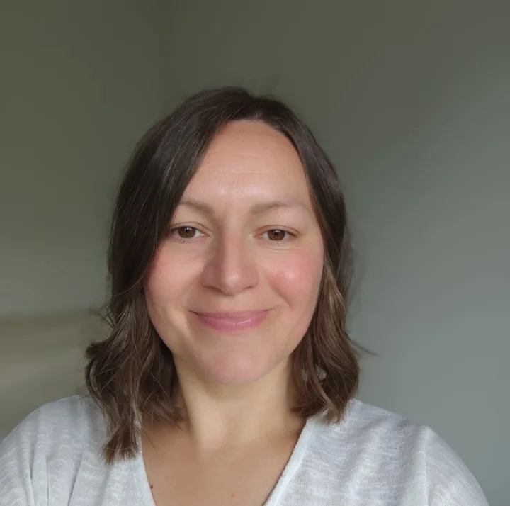

Retrouver un espace de calme à l'intérieur de vous
Lorsque tout s'accélère autour de nous, il devient difficile de savoir comment ralentir. Les pratiques somatiques offrent des repères simples pour retrouver un sentiment d'ancrage et de sécurité.
Espace ONE · Meylan et en visio
Une approche corporelle de régulation du système nerveux, pour les femmes qui ont beaucoup porté, beaucoup donné et beaucoup tenu.

Vous sentez-vous souvent…
Si oui, le problème n'est peut-être pas un manque de volonté.
Votre système nerveux fait simplement de son mieux pour vous protéger.
Quand nous traversons trop de stress, de pression ou de charge nerveuse, nous cherchons souvent des réponses dans notre tête.
Mais le corps possède son propre langage.
Lorsqu'on apprend à l'écouter, il devient possible de retrouver progressivement

Un espace pour expérimenter
Ici, il n'y a rien à réussir.
Je vous propose simplement d'explorer des pratiques corporelles accessibles qui permettent au système nerveux de retrouver davantage d'équilibre et de souplesse. Cette recherche de souplesse plutôt que de contrôle est au cœur de l'approche. Chaque personne avance à son rythme.
Le plus important n'est pas de comprendre.
C'est de ressentir.
Ce que vous pouvez découvrir ici
Lorsque tout s'accélère autour de nous, il devient difficile de savoir comment ralentir. Les pratiques somatiques offrent des repères simples pour retrouver un sentiment d'ancrage et de sécurité.
Le corps s'exprime souvent avant les mots. Les tensions, les inconforts ou certaines réactions automatiques peuvent devenir des informations précieuses lorsque l'on apprend à les écouter.
L'objectif n'est pas d'éliminer le stress. L'objectif est de développer davantage de souplesse pour le traverser sans qu'il prenne toute la place.
Quel espace est juste pour vous aujourd'hui ?
Quand le corps est épuisé, on cherche souvent la solution idéale. En réalité, la première étape consiste souvent à respecter là où l'on se trouve aujourd'hui.
Peut-être avez-vous simplement besoin de relâcher la pression. Peut-être ressentez-vous l'envie d'aller plus loin pour retrouver un équilibre durable. Ou peut-être savez-vous déjà qu'un changement plus profond est en train de vous appeler.
4 semaines · 450 €
Quand tout semble un peu trop.
Une parenthèse pour ralentir, relâcher la pression et retrouver un peu d'espace en vous. Un premier pas lorsque le corps demande avant tout de l'écoute, du repos et de l'attention.
Commencer12 semaines · 1 300 €
Le cœur de l'accompagnementVous tenez depuis longtemps. Mais votre corps reste en alerte.
Parcours ONE vous aide à sortir progressivement de cet état d'hypervigilance pour retrouver davantage de stabilité et de sécurité intérieure. Ce n'est pas une succession de séances. C'est un processus.
Rejoindre Parcours ONE4 mois · 2 000 €
Quand vous sentez que le changement doit aller plus loin.
Le temps, l'espace et l'accompagnement nécessaires pour permettre des changements plus profonds et plus durables. Pour celles qui sentent que le moment est venu d'aller plus loin.
Entrer en immersionUn même fil conducteur : revenir au corps, retrouver de la présence et avancer à votre rythme. Voir aussi les séances à l'unité.
Mon approche
J'ai découvert dans les approches somatiques une manière différente d'accompagner le changement. Au fil de ma pratique, j'ai observé combien le fait de revenir au corps pouvait apporter plus de calme intérieur, une meilleure présence à soi et davantage de stabilité dans le quotidien.
Je ne cherche pas à vous transmettre une méthode de plus ou une solution toute faite. Je vous invite à renouer avec une ressource que vous possédez déjà : votre capacité à ressentir, à vous réguler et à retrouver votre équilibre.
Instructrice agréée LemniWave® et Micro Massage®
Certaines choses ne s'apprennent pas seulement avec la tête.
Elles se découvrent, se vivent et s'intègrent par l'expérience.

À propos
J'ai découvert les approches somatiques à un moment où je cherchais moins de lutte et plus de paix intérieure. Au fil des années, j'ai constaté combien le retour au corps pouvait transformer notre manière de vivre le stress, les émotions et les défis du quotidien.
Aujourd'hui, j'accompagne les femmes qui ont beaucoup porté, beaucoup donné et beaucoup tenu, à retrouver un espace où elles peuvent enfin souffler, ressentir et se reconnecter à elles-mêmes.
Pourquoi Espace ONEElles en parlent
Même quand ça secoue, je ne pars plus en vrille. Je sais revenir à moi. Je me sens ancrée. C'est un vrai avant/après.
Michelle
Aujourd'hui j'ai dit non sans culpabiliser. Une première. Je sens mes limites, je me sens solide. ONE m'a reconnectée à moi. Je suis tellement reconnaissante.
Carole
J'ai passé une journée entière sans me sentir en tension. C'est fou. Je ne pensais pas que c'était possible pour moi. Ça change tout.
Anne Cécile
Delphine… je crois que je respire vraiment pour la première fois depuis des années. Tu m'as sortie de cet état d'alerte permanent. Je me sens stable. Merci pour ça.
Anabelle
Merci à toi pour ta bienveillance et ton empathie. N'hésitez pas une seule seconde.
Aurore
Contrairement à d'autres, elle n'a pas mis en avant ses capacités. Elle m'a placée au cœur des séances. Garde le cap, et rappelle-toi : « tu es ta propre limite ».
Camille
Un chemin vers plus de calme et de présence
La vie ne devient pas parfaite. Mais on la traverse avec plus de souplesse.